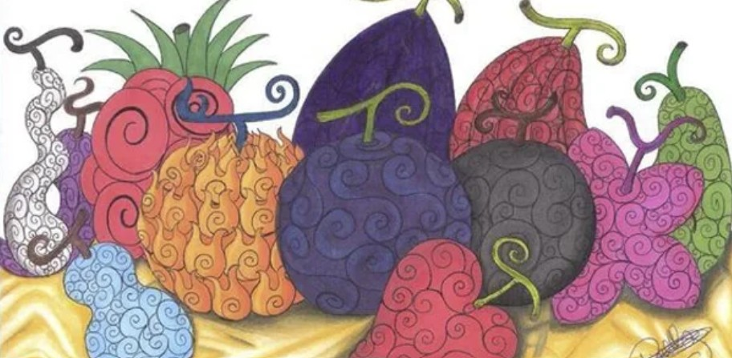
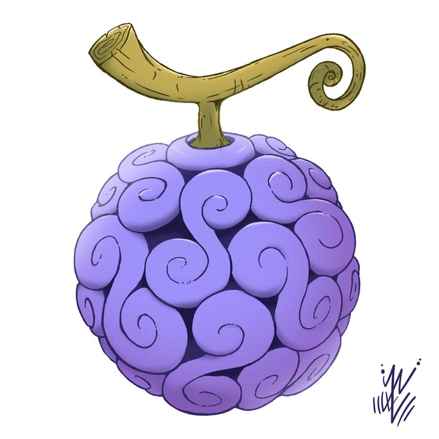
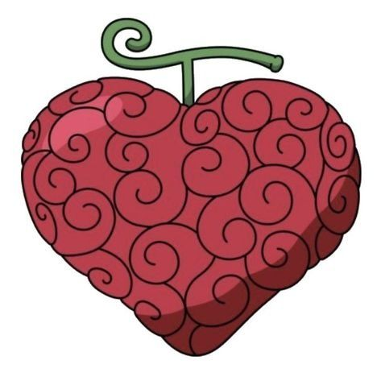
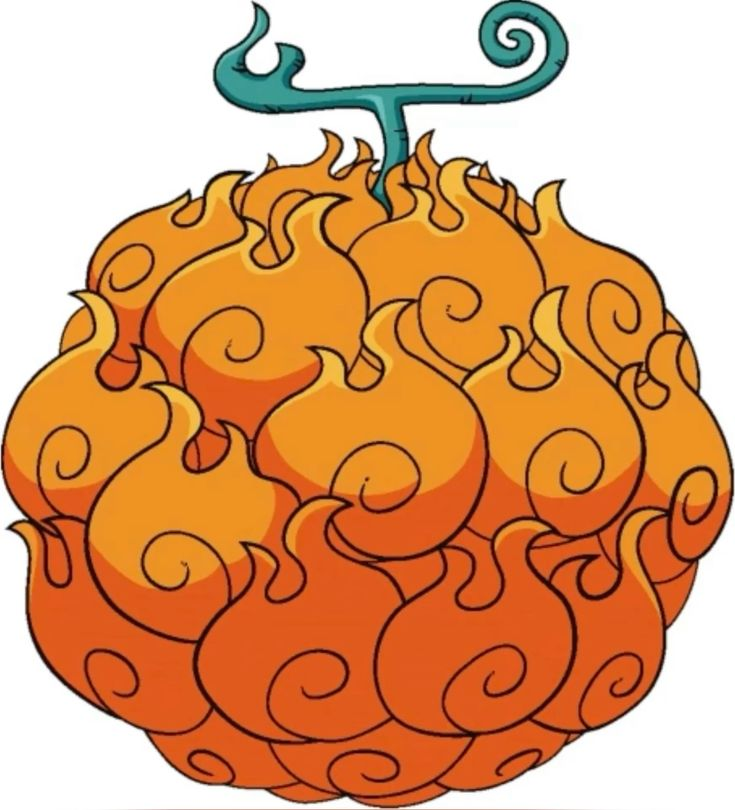

One Piece
Frutas del diablo
Las Frutas del Diablo son frutas misteriosas que otorgan poderes sobrenaturales a quien las come, pero con una gran desventaja: el usuario pierde la capacidad de nadar y el mar lo debilita. Son una de las bases del sistema de poder de One Piece y explican muchas de las habilidades mas impactantes de la serie.
Volver a One PieceGuia general
Que son y por que son tan importantes
Las Frutas del Diablo cambian por completo el estilo de combate de quien las come. Algunas vuelven el cuerpo el usuario elastico, otras permiten transformarse en animales y otras convierten a su portador en fuego, luz, arena o hielo.
El precio de ese poder es enorme: el agua de mar debilita al usuario, le impide moverse con normalidad y le quita la capacidad de nadar. Por eso, incluso personajes fortisimos con fruta siguen necesitando estrategia, haki y apoyo de su tripulacion.
- No existen dos frutas iguales activas a la vez.
- Cuando un usuario muere, el poder reaparece en otra fruta.
- Marshall D. Teach es el unico caso conocido con dos frutas.
- Vegapunk ha descubierto bastante sobre su funcionamiento y algunas parecen tener voluntad propia.
Los tres grandes tipos
Tipo 1
Paramecia
Las Paramecia suelen dar habilidades especiales, alterar el cuerpo del usuario o permitir efectos raros y conceptuales sobre objetos, personas o el entorno. Son las mas variadas de toda la serie y por eso tambien son las mas dificiles de encasillar.
Ejemplos importantes: Monkey D. Luffy con la Gomu Gomu / Hito Hito no Mi modelo Nika, Trafalgar D. Water Law con la Ope Ope no Mi, Donquixote Doflamingo con la Ito Ito no Mi, Charlotte Katakuri con la Mochi Mochi no Mi y Eustass Kid con la Jiki Jiki no Mi.
- Elasticidad y cambios del propio cuerpo.
- Manipulacion de objetos o del entorno.
- Alteraciones corporales muy concretas.
- Poderes raros, tecnicos o directamente conceptuales.
Tipo 2
Zoan
Las Zoan permiten transformarse en animales y suelen tener tres formas base: forma humana, forma hibrida y forma animal completa. Son famosas por aumentar la fuerza fisica, la resistencia y la capacidad de recuperacion del usuario.
Zoan normales: Tony Tony Chopper con la Hito Hito no Mi y Kaku con su fruta de jirafa.
Zoan prehistoricas: King con el pteranodon, Queen con el braquiosaurio y Ulti con el pachycephalosaurus.
Zoan miticas: Marco con el fenix azul regenerativo, Kaido con el dragon oriental, Yamato con su lobo divino y Luffy con el dios solar Nika.
- Fuerza fisica brutal.
- Regeneracion y gran aguante.
- Resistencia enorme en combate.
- Transformaciones animales de todo tipo.
Tipo 3
Logia
Durante gran parte de la serie las Logia se consideran las mas terrorificas porque permiten convertirse en un elemento natural. Los ataques normales suelen atravesar al usuario, lo que obliga a recurrir a counters naturales, haki o debilidades especificas.
Ejemplos importantes: Portgas D. Ace con el fuego, Crocodile con la arena, Enel con el rayo, Kuzan con el hielo, Sakazuki con el magma, Borsalino con la luz y Smoker con el humo.
- Convertirse en fuego, luz, arena, humo, hielo o magma.
- Crear cantidades enormes de su elemento.
- Intangibilidad frente a ataques normales.
Despertar y frutas mas rotas
Algunas frutas pueden despertar y llevar su poder a otro nivel. El despertar suele expandir el efecto de la fruta al entorno o potenciar tecnicas ya conocidas hasta volverlas mucho mas peligrosas.
- Donquixote Doflamingo. Convierte edificios y superficies en hilos.
- Charlotte Katakuri. Transforma el entorno en mochi y mejora su control absoluto del terreno.
- Monkey D. Luffy. Alcanza el Gear 5, la forma vinculada al poder de Nika.
- Trafalgar D. Water Law. Lleva su ROOM a una escala mucho mas tecnica y destructiva.
Entre las frutas mas rotas del anime y manga suelen citarse la Ope Ope no Mi por su cirugia total y la operacion de inmortalidad, la Gura Gura no Mi de Edward Newgate por sus terremotos gigantes, la Yami Yami no Mi de Marshall D. Teach por anular poderes, la Pika Pika no Mi de Borsalino por la velocidad de la luz y la Hito Hito no Mi modelo Nika por su libertad absurda y casi caricaturesca.
Debilidades de las Frutas del Diablo
- Agua de mar.
- Kairouseki o piedra marina.
- Haki, especialmente el Haki de Armadura.
- Algunas frutas tienen counters naturales, como la goma frente a la electricidad.
Tres frutas muy conocidas

Gomu Gomu no Mi / Hito Hito no Mi modelo Nika
La fruta asociada a Luffy convierte su cuerpo en goma y, mas adelante, revela su verdadera naturaleza mitica ligada al dios solar Nika.
Paramecia aparente / Zoan mitica real
Ope Ope no Mi
La fruta de Law crea una ROOM donde puede cortar, mover, intercambiar y operar objetivos como si fuera un cirujano del campo de batalla.
Paramecia tecnica y letal
Mera Mera no Mi
La fruta del fuego permite crear, controlar y convertirse en llamas. Primero la uso Ace y mas tarde paso a manos de Sabo.
Logia elemental clasicaFruta destacada
Gomu Gomu no Mi / Hito Hito no Mi modelo Nika
Durante gran parte de la historia parece una Paramecia simple que vuelve elastico el cuerpo de Luffy. Eso explica ataques como el Gomu Gomu no Pistol, la resistencia a golpes contundentes y una enorme creatividad para luchar.
Mas adelante se revela que en realidad es una Zoan mitica vinculada a Nika, figura asociada a la libertad, la risa y un estilo de combate completamente libre. Su despertar desemboca en el Gear 5, una forma exagerada, flexible y casi caricaturesca que rompe muchas reglas del combate convencional.
Fruta destacada
Ope Ope no Mi
La Ope Ope no Mi es una de las frutas mas tecnicas y peligrosas de One Piece. Dentro de su ROOM, Law puede seccionar sin matar, intercambiar posiciones con Shambles, lanzar ataques internos como Gamma Knife y manipular cuerpos u objetos con precision quirurgica.
Su fama viene tambien por la llamada operacion de juventud perpetua, capaz de otorgar inmortalidad a costa de la vida del usuario. Por eso se considera una fruta top tier, no solo por dano, sino por utilidad, control del espacio y valor estrategico.
Fruta destacada
Mera Mera no Mi
La Mera Mera no Mi es una Logia clasica y muy querida por los fans. Permite crear fuego, lanzarlo a gran escala y convertir el cuerpo del usuario en llamas, lo que le da intangibilidad frente a muchos ataques normales.
Con Ace brillo por su potencia ofensiva y por tecnicas iconicas como Hiken. Tras su muerte, el poder reaparece y termina en manos de Sabo, lo que tambien sirve para mostrar una de las reglas mas interesantes del sistema: las frutas regresan al mundo cuando su usuario desaparece.